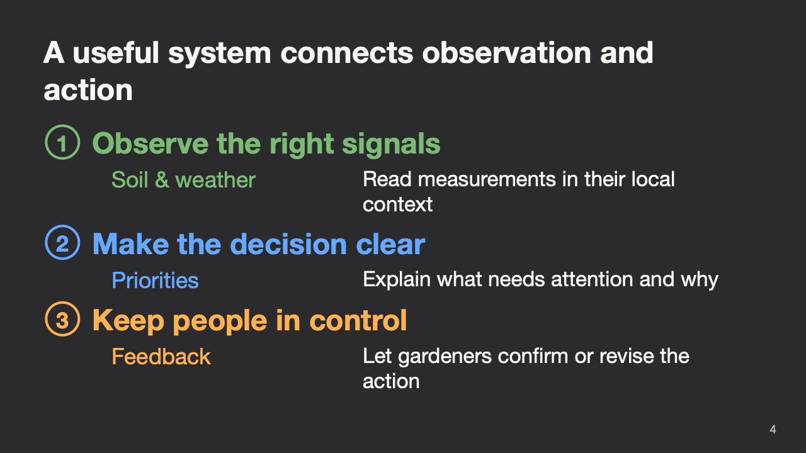
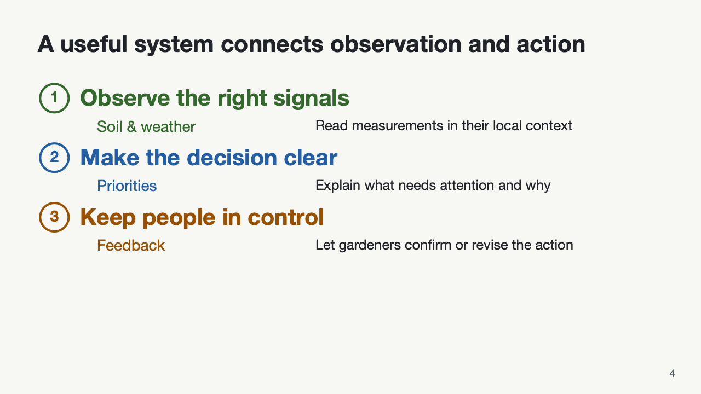

Narrative16.5s · 1080p · 60 fps
Open a device, enter an idea
Open photographic laptop hardware, browse centered apps, type a request, send it, and close the screen.
Choose a demo, then adapt its content, timing, and source. Preserve the composition and the causal sequence that make the idea easy to follow.
Open photographic laptop hardware, browse centered apps, type a request, send it, and close the screen.
Red Tesla emblem, a moving edge light, platinum lettering, and the Cybercab background. A local reference variant of the reusable title scene.
Keep the connected framework intact through a rigid spin, then use its three parts to organize publications.
Follow structure and location branches, recognize cell crops, and assemble one complete table.
See tokenization, visual vocabulary selection, image reconstruction, and the training feedback loop.
Separate frozen training targets from trainable predictions, and compare only the masked positions.
Start at a measured point, trace a curve, then build a true 3D mesh with a rising horizontal plane.
Track checkpoints across a 3D landscape and compare two paths without changing the camera.
Follow sampled frames, visual tokens, and model activity before introducing total inference cost.
Read a response and watch its score change on the same timeline, with matched color highlights.
Show a real tool state, perform one action, then smoothly focus a high-resolution detail with a stable reading hold.
Trace crisp letter edges with a moving rim light, then reveal metallic lettering and a background scene.
Keep the full document visible while linked corners show exactly where a magnified detail came from.
Reveal a matched comparison with a shared camera and a divider that rests on a meaningful boundary.
Fade secondary rows, compare the baseline and method, then reveal the one number worth remembering.
Connect milestones and the artifacts they produced, from a motivating observation to evaluated results.
Build the chart first, focus the relevant region, then reveal the insight supported by the evidence.
No matching pattern. Try another term or category.
Choose a palette after choosing the explanation. Review every adapted figure against the final background.


The library stays reusable. my-project holds the current topic, sources, storyboard, spoken notes, and outputs. A new agent can begin with the entry guide and reproduce the workflow locally.
Research data in these demos are illustrative. Laptop hardware and the Tesla variant use separately documented reference footage; their presence in this local gallery does not imply redistribution rights. The device UI is rendered at 60 fps; the hardware source is 30 fps.